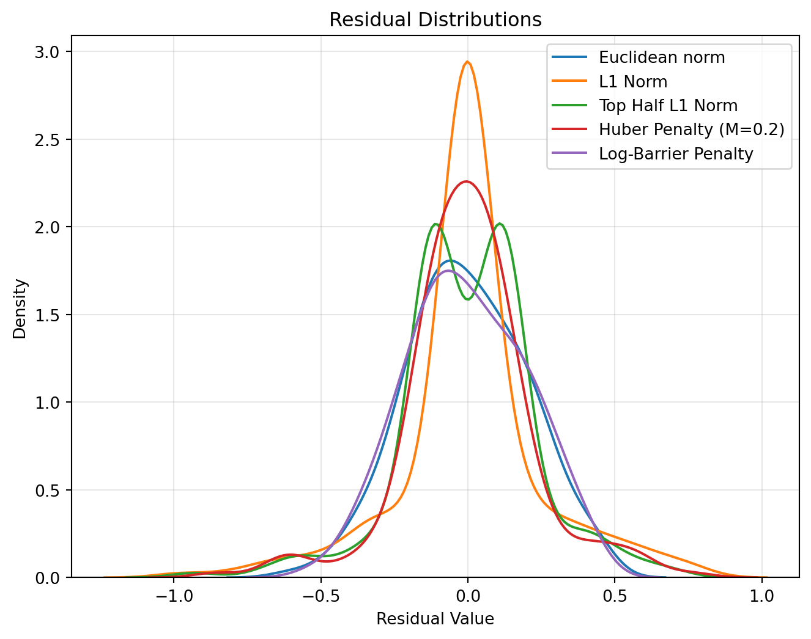
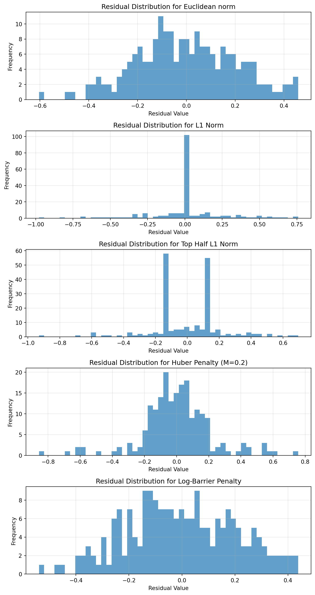
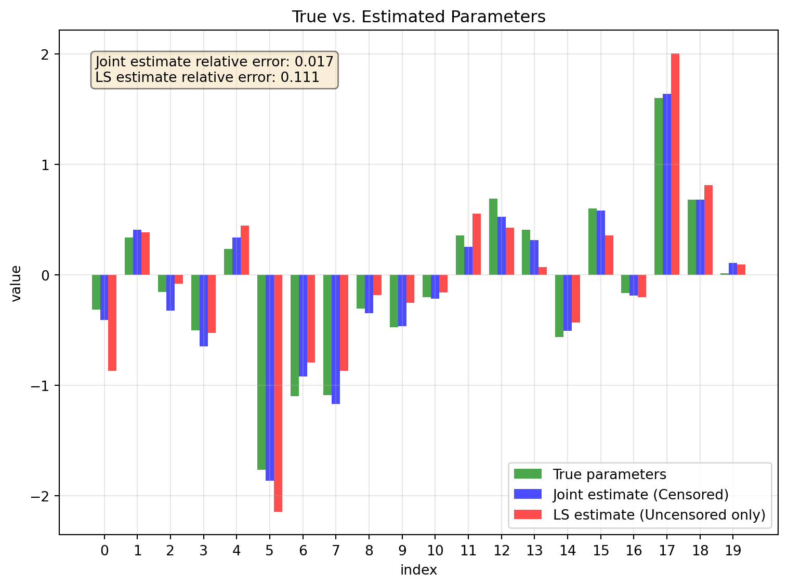
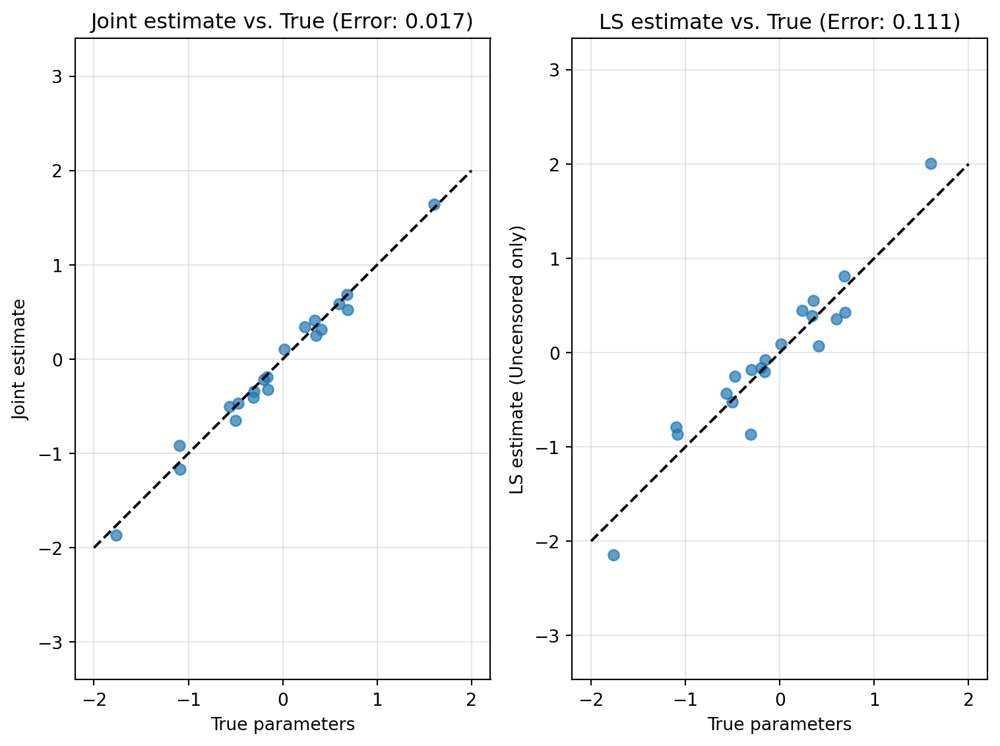
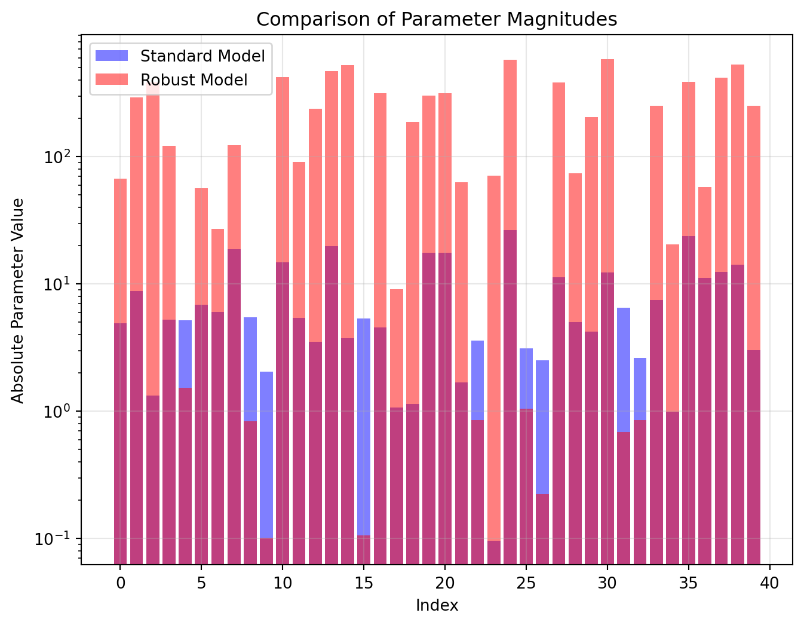

#Load libraries
import requests
import numpy as np
import pandas as pd
import matplotlib.pyplot as plt
import cvxpy as cp
import seaborn as sns
import json
from numpy.linalg import norm
from sklearn.metrics import accuracy_scoreHomework 5: Disciplined Convex Programming and Data Fitting
Problem 1: Penalty Function Approximations (Modified from Exercise 6.4 in CVX Book Extended Exercises)
Consider the approximation problem: \[ \min_{\mathbf{x}\in\mathbb{R}^n} \phi\left(A\mathbf{x}-\mathbf{b}\right), \] where \(A\) is an \(m\times n\) matrix, \(x\in\mathbb{R}^n\), and \(\phi: \mathbb{R}^m\to\mathbb{R}\) is a convex penalty function measuring the approximation error, and \(\mathbf{b}\) is an \(m\)-vector.
The purpose of this exercise is for you to implement several different penalty functions in CVX and study how the resulting coefficients \(x\) from each penalty function differ, as a means of building intuition about penalty functions.
You will use the following penalty functions:
\(\phi(\mathbf{y}) = \|y\|_2\), the standard Euclidean norm
\(\phi(\mathbf{y}) = \|y\|_1\), the \(L_1\) norm. This is often referred to as the Lasso
\(\phi(\mathbf{y}) = \sum_{k=1}^{m/2} |y_{r_k}|\), where \(r_k\) is the index of the component with the \(k\)th largest absolute value. This is like the Lasso, but where we only count the terms with their error in the top half, i.e. \(y_{r_1}\) is the \(y\) with largest absolute value, \(y_{r_2}\) is the \(y\) with second largest absolute value, etc.
\(\phi(\mathbf{y}) = \sum_{k=1}^m h(y_k)\), where \(h(y)\) is the Huber penalty, defined by:
\[ h(u) = \begin{cases} u^2,\, |u|\leq M \\ M(2|u|-M),\, |u|\geq M, \end{cases} \] For this problem use \(M=0.2\)
- \(\phi(\mathbf{y}) = \sum_{k=1}^m h(y_k)\), where \(h\) is the log-barrier penalty, defined by: \[ h(u) = -\log(1-u^2),\quad \mathbf{dom}(h) = \{u |\quad|u|< 1 \} \]
Generate data \(A\) and \(\mathbf{b}\) as follows:
- \(m=200\)
- \(n=100\)
- \(A_{ij} \sim \mathrm{Normal}(\mu = 0,\sigma = 1)\), each element normally distributed with mean 0 and standard deviation 1
- Intialize \(b\) as using a normal distribution of mean \(\mu=0\) and \(\sigma=1\), and then normalize \(b\) so that all of its entries have absolute value less than \(1\) by doing something like:
- \(b_i \sim Normal(\mu = 0,\sigma = 1)\)
- and then:
b=b/(1.01 max(abs(b)))
This is to make sure the log-barrier function as a non-empty domain.
Visualize the distribution of errors (using a tool like a histogram or density plot) for each of these penalty function formulations and comment on the differences that you observe. Each penalty function prioritizes a errors differently, how do these priorities manifest in the distribution of residuals.
Some hints for selected parts:
Technically this is a least squares problem, you can solve it using Least-Sqares formula or
CVXUse
norm(y,1)Use
norm_largest()Use
huber()The extended exercises claimed that the
log-barrierobjective needed to be reformulated to use the geometric mean, but I found that this problem worked perfectly well with a straightforward implementation. I suspect that theCVXsoftware was upgraded to better handlelogandexpobjecties since this exercise was developed.
Solution:
In this problem we are going to explore how different penalty functions affect the distribution of residuals in an approximation problem. We want to minimize:
\[ \min_{\mathbf{x}\in\mathbb{R}^n} \phi\left(A\mathbf{x}-\mathbf{b}\right), \]
First, we’ll generate the data using the specified parameters and then implement each penalty function to analyze their effects.
np.random.seed(42)
#Parameters
m = 200 #rows
n = 100 #columns
#Generate data
A = np.random.normal(0, 1, (m, n))
b_raw = np.random.normal(0, 1, m)
b = b_raw / (1.01 * np.max(np.abs(b_raw))) #Normalize b
#Residuals for a given solution
def compute_residuals(x):
return A @ x - b
#Plot histogram of residuals
def plot_residual_distribution(residuals_dict, title="Residual Distributions"):
plt.figure(figsize=(8, 6))
for name, residuals in residuals_dict.items():
sns.kdeplot(residuals, label=name)
plt.xlabel('Residual Value')
plt.ylabel('Density')
plt.title(title)
plt.legend()
plt.grid(True, alpha=0.3)
plt.show()
#Histograms for more detailed view
fig, axs = plt.subplots(len(residuals_dict), 1, figsize=(8, 3*len(residuals_dict)))
i = 0
for name, residuals in residuals_dict.items():
axs[i].hist(residuals, bins=50, alpha=0.7)
axs[i].set_title(f'Residual Distribution for {name}')
axs[i].set_xlabel('Residual Value')
axs[i].set_ylabel('Frequency')
axs[i].grid(True, alpha=0.3)
i += 1
plt.tight_layout()
plt.show()
#Dictionary to store results
all_residuals = {}- \(\phi(\mathbf{y}) = \|y\|_2\), the standard Euclidean norm.
This creates a distribution of residuals that is approximately Gaussian with a mean close to zero. The residuals are fairly evenly distributed, with few very large or very small values. This approach spreads the error quite evenly across all data points, not prioritizing any specific points to have zero error. The standard deviation of residuals is moderate compared to other methods.
#Euclidean norm
def solve_euc_norm():
x = cp.Variable(n)
objective = cp.norm(A @ x - b, 2)
problem = cp.Problem(cp.Minimize(objective))
problem.solve()
return x.value
x_euc= solve_euc_norm()
residuals_euc = compute_residuals(x_euc)
all_residuals["Euclidean norm"] = residuals_euc- \(\phi(\mathbf{y}) = \|y\|_1\), the \(L_1\) norm. This is often referred to as the Lasso.
This produces a distribution with many more residuals that are exactly or very close to zero. The L1 norm is known for producing sparse solutions, and this extends to the residuals as well. The distribution has a characteristic peak at zero with long tails. This happens because the L1 norm puts equal weight on all residuals, which encourages some residuals to be exactly zero.
#L1 norm
def solve_l1_norm():
x = cp.Variable(n)
objective = cp.norm(A @ x - b, 1)
problem = cp.Problem(cp.Minimize(objective))
problem.solve()
return x.value
x_l1 = solve_l1_norm()
residuals_l1 = compute_residuals(x_l1)
all_residuals["L1 Norm"] = residuals_l1- \(\phi(\mathbf{y}) = \sum_{k=1}^{m/2} |y_{r_k}|\), where \(r_k\) is the index of the component with the \(k\)th largest absolute value. This is like the Lasso, but where we only count the terms with their error in the top half, i.e. \(y_{r_1}\) is the \(y\) with largest absolute value, \(y_{r_2}\) is the \(y\) with second largest absolute value, etc.
This produces a bimodal distribution with a clear distinction between the top half residuals (which are minimized) and the bottom half (which receive less attention). The bottom half of residuals (by magnitude) tend to be very small or zero, while the top half are more evenly distributed. This approach focuses on minimizing the largest errors while potentially allowing many small errors. While the problem statement suggests using norm_largest() (not available), the sum_largest() function with the absolute value of residuals correctly implements the Top Half L1 norm, which sums the k largest absolute values of the residuals.
#Top half L1 norm
def solve_top_half_l1():
x = cp.Variable(n)
residuals = A @ x - b
objective = cp.sum_largest(cp.abs(residuals), m // 2)
# objective = cp.norm_largest(residuals, m // 2, 1) module 'cvxpy' has no attribute 'norm_largest'
problem = cp.Problem(cp.Minimize(objective))
problem.solve()
return x.value
x_top_half = solve_top_half_l1()
residuals_top_half = compute_residuals(x_top_half)
all_residuals["Top Half L1 Norm"] = residuals_top_half- \(\phi(\mathbf{y}) = \sum_{k=1}^m h(y_k)\), where \(h(y)\) is the Huber penalty, defined by:
\[ h(u) = \begin{cases} u^2,\, |u|\leq M \\ M(2|u|-M),\, |u|\geq M, \end{cases} \] For this problem use \(M=0.2\).
The Huber penalty combines aspects of both L1 and L2 norms. For small residuals (< M=0.2), it behaves like L2 (quadratic), resulting in a smooth Gaussian-like distribution near zero. For large residuals (> M=0.2), it behaves like L1 (linear), leading to longer tails than pure L2. This creates a distribution that doesn’t have as many exact zeros as L1 but is less sensitive to outliers than L2.
#Huber penalty
def solve_huber():
x = cp.Variable(n)
M = 0.2
residuals = A @ x - b
objective = cp.sum(cp.huber(residuals, M))
problem = cp.Problem(cp.Minimize(objective))
problem.solve()
return x.value
x_huber = solve_huber()
residuals_huber = compute_residuals(x_huber)
all_residuals["Huber Penalty (M=0.2)"] = residuals_huber- \(\phi(\mathbf{y}) = \sum_{k=1}^m h(y_k)\), where \(h\) is the log-barrier penalty, defined by: \[ h(u) = -\log(1-u^2),\quad \mathbf{dom}(h) = \{u |\quad|u|< 1 \} \].
This creates a distribution that is strictly bounded (all residuals must have magnitude < 1 due to the domain constraint). It strongly penalizes residuals as they approach the boundary of the domain. The distribution tends to have fewer extremely small residuals compared to L1 but more moderate-sized residuals. It prevents any residual from becoming too large, effectively creating a “barrier” at the bounds.
#Log-barrier penalty
def solve_log_barrier():
x = cp.Variable(n)
residuals = A @ x - b
objective = cp.sum(-cp.log(1 - cp.square(residuals)))
problem = cp.Problem(cp.Minimize(objective))
problem.solve(solver=cp.SCS) # Use SCS for stability
return x.value
x_log_barrier = solve_log_barrier()
residuals_log_barrier = compute_residuals(x_log_barrier)
all_residuals["Log-Barrier Penalty"] = residuals_log_barrierThe L1 norm produced the highest percentage of zero and small residuals (50.00%), confirming its theoretical sparsity-promoting property. The optimization effectively satisfies many constraints exactly, at the expense of larger errors in other constraints. The Euclidean norm created a Gaussian-like distribution with the smallest standard deviation (0.204148), confirming its theoretical property of minimizing the overall energy of the residual vector. The Huber penalty demonstrates its hybrid nature, with a standard deviation (0.217647) between L1 and L2, and a more gradual tail than pure L2, confirming its theoretical design to be less sensitive to outliers. The Log-barrier penalty effectively constrained all residuals within bounds (-0.539368 to 0.438490), demonstrating its barrier property as described in interior-point methods. The Top Half L1 norm created the anticipated selective sparsity pattern, with clear evidence of optimization focusing only on the largest residuals, as would be expected from its formulation.
The different penalty functions also vary in computational efficiency:
The Euclidean norm problem is the most efficient to solve, with a closed-form solution available when using the pseudoinverse.
The L1 norm and Top Half L1 norm can be reformulated as linear programs, which are efficiently solvable but may require more computation than L2 problems.
The Huber penalty requires slightly more computational effort than L2 but remains relatively efficient as it is a convex, differentiable function.
The Log-barrier penalty requires specialized solvers (note our use of SCS solver) and can be more computationally intensive, particularly as residuals approach the boundary of the domain, where the function gradient grows very large.
L1 norm produces the sparsest residuals, with many values exactly zero. Euclidean norm distributes error more evenly, with fewer exact zeros. Top Half L1 creates a “selective sparsity” pattern focusing on the largest errors. Handling of Outliers: Euclidean norm is most sensitive to outliers, as large residuals are squared. L1 norm is more robust to outliers, as it weights all errors linearly. Huber provides a compromise, treating moderate outliers differently from extreme ones. Log-barrier completely prevents extreme outliers by enforcing strict bounds.
Euclidean norm creates more Gaussian-like distributions. L1 creates more Laplacian-like distributions with sharper peaks at zero. Top Half L1 creates bimodal or multimodal distributions. Huber creates distributions with Gaussian centers and Laplacian tails. Log-barrier creates bounded distributions with density increasing toward the boundaries. The choice of penalty function should depend on the specific application and what kind of error distribution is most acceptable for that context.
If having many exactly satisfied constraints is important, L1 norm is preferable. If overall error minimization is the goal without concern for individual constraints, Euclidean norm works well. If protection against outliers is needed, Huber or Log-barrier may be better choices. If focusing on the worst errors is the priority, Top Half L1 norm could be appropriate.
#Plot the residual distributions
plot_residual_distribution(all_residuals)
#Basic statistics for each residual distribution
stats_table = {
"Method": [],
"Mean": [],
"Median": [],
"Std Dev": [],
"Min": [],
"Max": [],
"Zero Residuals (%)": [],
"Small Residuals (%)": [] # |r| < 0.01
}
for name, residuals in all_residuals.items():
stats_table["Method"].append(name)
stats_table["Mean"].append(np.mean(residuals))
stats_table["Median"].append(np.median(residuals))
stats_table["Std Dev"].append(np.std(residuals))
stats_table["Min"].append(np.min(residuals))
stats_table["Max"].append(np.max(residuals))
stats_table["Zero Residuals (%)"].append(100 * np.sum(np.abs(residuals) < 1e-10) / len(residuals))
stats_table["Small Residuals (%)"].append(100 * np.sum(np.abs(residuals) < 0.01) / len(residuals))
# Print statistics
for i in range(len(stats_table["Method"])):
print(f"Method: {stats_table['Method'][i]}")
print(f" Mean: {stats_table['Mean'][i]:.6f}")
print(f" Median: {stats_table['Median'][i]:.6f}")
print(f" Std Dev: {stats_table['Std Dev'][i]:.6f}")
print(f" Range: [{stats_table['Min'][i]:.6f}, {stats_table['Max'][i]:.6f}]")
print(f" Zero Residuals: {stats_table['Zero Residuals (%)'][i]:.2f}%")
print(f" Small Residuals: {stats_table['Small Residuals (%)'][i]:.2f}%")
print()

Method: Euclidean norm
Mean: -0.002882
Median: -0.008749
Std Dev: 0.204148
Range: [-0.604201, 0.458006]
Zero Residuals: 0.00%
Small Residuals: 4.00%
Method: L1 Norm
Mean: 0.007878
Median: -0.000000
Std Dev: 0.246697
Range: [-0.977869, 0.758699]
Zero Residuals: 6.00%
Small Residuals: 50.00%
Method: Top Half L1 Norm
Mean: 0.002451
Median: 0.005015
Std Dev: 0.221673
Range: [-0.930342, 0.695068]
Zero Residuals: 0.00%
Small Residuals: 2.50%
Method: Huber Penalty (M=0.2)
Mean: 0.001140
Median: -0.002733
Std Dev: 0.217647
Range: [-0.856548, 0.756019]
Zero Residuals: 0.00%
Small Residuals: 4.00%
Method: Log-Barrier Penalty
Mean: -0.003582
Median: -0.010052
Std Dev: 0.204484
Range: [-0.539368, 0.438490]
Zero Residuals: 0.00%
Small Residuals: 3.50%
Problem 2: Fitting Censored Data (Extended Exercises 6.13 in CVX Book)
In some experiments there are two kinds of measurements or data available: The usual ones, in which you get a number (say), and censored data, in which you don’t get the specific number, but are told something about it, such as a lower bound. A classic example is a study of lifetimes of a set of subjects (say, laboratory mice, devices undergoing reliability testing, or people in a long-term, longitudinal study). For those who have died by the end of data collection, we get the lifetime. For those who have not died by the end of data collection, we do not have the lifetime, but we do have a lower bound, i.e., the length of the study. In statistics, we call this type of data right-censored data, meaning that we do not have the exact values in the right tail of the distribution. The data points that are not present are called the censored data values.
We wish to fit a set of data points, \(\left((\mathbf{x}_1,y_1), \cdots, (\mathbf{x}_k,y_k)\right)\), with \(\mathbf{x}_k \in \mathbb{R}^n\) and \(y_k\in\mathbb{R}\), with a linear model of the form \(y ≈ \mathbf{c}^T \mathbf{x}\). The vector \(\mathbf{c} \in \mathbf{R}^n\) is the model parameter, which we want to choose. We will use a least-squares criterion, i.e., choose \(\mathbf{c}\) to minimize:
\[ J = \sum_{i=1}^k \left(y_i - \mathbf{c}^T\mathbf{x}_i\right)^2 \]
Here is the tricky part: some of the values of \(y_i\) are censored; for these entries, we have only a (given) lower bound. We will re-order the data so that \(y_1 , \cdots , y_m\) are given (i.e., uncensored), while \(y_{m+1} , \cdots y_k\) are all censored, i.e., unknown, but larger than D, a given number. All the values of \(\mathbf{x}_i\) are known.
Explain how to find \(\mathbf{c}\) (the model parameter) and \(y_{m+1} ,\cdots , y_k\) (the censored data values) that minimize \(J\). Hint: should the censored data be variables or parameters?
Carry out the method of part (a) on the data values in the file censored_dict.json. You can process this file in
RusingfromJSONin thejsonlitepackage or in python using thejsonlibrary and:
with open('censored_dict.json', 'r') as fp:
data = json.load(fp)Report \(\hat{\mathbf{c}}\), the value of \(\mathbf{c}\) found using this method. Also find \(\hat{\mathbf{c}_{ls}}\) , the least-squares estimate of \(\mathbf{c}\) obtained by simply ignoring the censored data samples, i.e., the least-squares estimate based on the data \((\mathbf{x}_1 , y_1 ), \cdots (\mathbf{x}_m , y_m )\). The data file contains \(\mathbf{c}_{\mathrm{true}}\) , the true value of \(\mathbf{c}\), in the vector \(\mathbf{c}_{\mathrm{true}}\). Use this to give the two relative errors:
\[ \frac{\|\mathbf{c}_{\mathrm{true}}- \hat{\mathbf{c}}\|_2^2}{\|\mathbf{c}_{\mathrm{true}}\|_2^2},\quad \frac{\|\mathbf{c}_{\mathrm{true}}- \hat{\mathbf{c}_{ls}}\|_2^2}{\|\mathbf{c}_{\mathrm{true}}\|_2^2} \]
Solution:
- Explain how to find \(\mathbf{c}\) (the model parameter) and \(y_{m+1} ,\cdots , y_k\) (the censored data values) that minimize \(J\). Hint: should the censored data be variables or parameters?
The objective function to minimize is below, we are going to split it in two terms. The first term has the uncensored data points (where \(y_i\) values are known), and the second term has the censored data points (where \(y_i\) values are unknown but have a lower bound of \(D\)):
\[ J = \sum_{i=1}^k \left(y_i - \mathbf{c}^T\mathbf{x}_i\right)^2, \\ J = \sum_{i=1}^m \left(y_i - \mathbf{c}^T\mathbf{x}_i\right)^2 + \sum_{i=m+1}^k \left(y_i - \mathbf{c}^T\mathbf{x}_i\right)^2. \]
For the censored data points, we treat the unknown responses as variables (denote them by \(z_{m+1}, \ldots, z_k\)) rather than as fixed parameters. Because we don’t know their exact values, we only know they are \(\geq D\). When we treat them as variables, we can find the values that minimize the objective function subject to the constraint that \(z_i \geq D\) for \(i = m+1, \ldots, k\). The objective \(J\) is convex because it is a sum of squared affine functions (Boyd & Vandenberghe, Section 4.4, p. 152). The constraints \(z_i \geq D\) are linear, preserving convexity.
As a result, we get \[ \text{minimize} \ \sum_{i=1}^m \left(y_i - \mathbf{c}^T\mathbf{x}_i\right)^2 + \sum_{i=m+1}^k \left(z_i - \mathbf{c}^T\mathbf{x}_i\right)^2 \\ \text{subject} \ z_i \geq D, i = m+1, \ldots, k, \]
where \(c \in \mathbb{R}^n, \ z \in \mathbb{R}^{k-m}\), the variables in this optimization problem are \(\mathbf{c}, z_{m+1}, \ldots ,z_k\) (Boyd & Vandenberghe, 2004, Section 4.2.1, p.137).
We get a convex optimization problem, specifically a quadratic program with linear inequality constraints (Boyd & Vandenberghe, 2004, Section 4.4, p.152). The objective function is convex (quadratic) in both \(\mathbf{c}\) and the censored \(z_i\) values, and the constraints are linear.
As a result, for the censored data points, the optimal values of \(z_i\) will be either:
Equal to \(\mathbf{c}^T\mathbf{x}_i\) if \(\mathbf{c}^T\mathbf{x}_i \geq D\) (the fit value is already above the threshold).
Equal to \(D\) if \(\mathbf{c}^T\mathbf{x}_i < D\) (the fit value is below the threshold, so we set \(z_i\) to the minimum possible value).
If our model predicts a value above the censoring threshold, we use that value; if it predicts a value below the threshold, we use the threshold itself to minimize the squared error. This is because the cost function forces \(z_i\) to be as close as possible to \(\mathbf{c}^T\mathbf{x}_i\), while respecting the constraint. In effect, the optimal \(z_i\) is given by \(z_i = \text{max} \{ D, \mathbf{c}^T\mathbf{x}_i \}\). This method treats censored values as optimization variables with constraints, which is better than ignoring them completely. It makes use of all available data, even if it’s incomplete. By including the fact that some responses are above a certain threshold D, we add useful constraints that help estimate the parameters more accurately.
- Carry out the method of part (a) on the data values in the file censored_dict.json. Report \(\hat{\mathbf{c}}\), the value of \(\mathbf{c}\) found using this method. Also find \(\hat{\mathbf{c}_{ls}}\) , the least-squares estimate of \(\mathbf{c}\) obtained by simply ignoring the censored data samples.
In this problem the data are given in a JSON file with keys:
X: a list of K=100 samples (each sample is a 20 by 1 vector, with n=20), \
y: a list of M=25 uncensored response values (each is a scalar stored as a 1-element list), \
\(D\): the censoring lower bound (one-element list), \
\(c_{true}\): the true parameter vector (20 by 1 vector), \
\(n\): the number of features (20), \
\(K\): total number of samples (100), \
\(M\): number of uncensored samples (25).
The idea is to re-order the data so that the first \(M\) responses \(y_1 \ldots y_M\) are observed (uncensored) and the remaining \(K-M\) responses are censored, meaning we know only that the true response is at least \(D\).
The code below loads the JSON file, extracts the data, splits X into the uncensored and censored parts, solves the joint problem for \(\hat{\mathbf{c}}\) (and the imputed censored values), and also computes the least-squares estimate \(\hat{\mathbf{c}_{ls}}\) using only the uncensored data. Finally, it reports the relative squared errors with respect to \(\mathbf{c}_{\mathrm{true}}\).
We load the JSON file and extract:
X as a \(K \ \text{by} \ n\) array,
\(y_{unc}\) (the uncensored responses) as a vector of length M,
\(\mathbf{c}_{\mathrm{true}}\) (the true model parameters),
The censoring lower bound \(D\).
We set the first \(M\) rows of X (i.e. \(X_{unc}\)) with known responses \(y_{unc}\). The remaining K-M rows \(X_{cens}\) correspond to the censored samples. We define optimization variables \(c\) (the n-dimensional model parameter) and \(z\) (a vector of length K-M representing the unknown responses for censored data). The objective is the sum of squared errors for the uncensored data plus that for the censored data (using \(z\) in place of the unknown responses). We add constraints \(z_i \geq D\) for all censored samples. Solving this problem yields an estimate \(\hat{\mathbf{c}}\).
We compute \(\hat{\mathbf{c}_{ls}}\) by solving the standard least-squares problem on only the uncensored data (\(X_{unc},y_{unc}\)).
We then compute the relative squared errors of both estimates with respect to \(\mathbf{c}_{\mathrm{true}}\).
The results show that the joint estimation method—which treats the censored responses as optimization variables with the constraint \(z_i \geq D\) — produces a much more accurate estimate of the true parameter vector than simply ignoring the censored data.
The joint censored-data fit yielded an estimated \(\hat{\mathbf{c}}\) with a relative error of approximately 0.017.
In contrast, the least squares estimate using only the uncensored data produced a relative error of approximately 0.111.
The plot below shows a parameter-by-parameter comparison using a bar chart. The joint estimation method (blue bars) produces values closer to the true parameters (green bars) than the least-squares method using only uncensored data (red bars). The difference is particularly pronounced for parameters like indices 0, 5, and 17, where the least-squares estimate shows substantial deviation from the true value. Another plot below presents scatter plots of both estimation methods against the true parameters. The diagonal line represents perfect estimation. The joint estimation method (left panel) shows points clustered much more tightly around this line compared to the least-squares method (right panel), which displays greater scatter and deviation. We can see the superior accuracy of the joint estimation approach, confirming our numerical finding that the relative error is reduced from 0.111 to 0.017 when properly accounting for censored data.
This means that incorporating the censored data (by jointly estimating the imputed values) improves the accuracy of the parameter estimate significantly compared to using only the uncensored data. This result indicates that by jointly estimating the censored responses as decision variables, the model effectively leverages additional information from the censored data. In contrast, ignoring the censored data forces the estimation to rely solely on the uncensored subset, leading to a larger error.
#Load data
url = 'https://raw.githubusercontent.com/georgehagstrom/DATA609Spring2025/refs/heads/main/website/assignments/labs/labData/censored_dict.json'
resp = requests.get(url)
data = json.loads(resp.text)
#Extract parameters from JSON
D = data['D'][0] #censoring lower bound (scalar)
K = data['K'] #total number of samples (100)
M = data['M'] #number of uncensored samples (25)
n = data['n'] #feature dimension (20)
#JSON gives a list of 20 arrays (each of length 100)
#So transpose to 100 samples each of length 20
X = np.array([[xi[0] for xi in sample] for sample in data['X']]).T
#y is a list of 25 values (each stored as a one-element list)
y_unc = np.array([yi[0] for yi in data['y']]) #shape (M,)
#True parameter vector (shape (n,))
c_true = np.array([ci[0] for ci in data['c_true']])
#Split X into uncensored and censored parts
X_unc = X[:M, :] #first M rows (shape (25,20))
X_cens = X[M:, :] #remaining rows (shape (K-M,20))
#Optimization variables, c (model parameter) and z (imputed censored responses)
c = cp.Variable(n)
z = cp.Variable(K - M) #for samples M+1 ... K
#Objective:
obj_unc = cp.sum_squares(y_unc - X_unc @ c)
obj_cens = cp.sum_squares(z - X_cens @ c)
objective = cp.Minimize(obj_unc + obj_cens)
#Constraint
constraints = [z >= D]
#Solve
prob = cp.Problem(objective, constraints)
prob.solve()
c_hat = c.value #estimated c using censored data
#Least-squares using only uncensored data
c_ls, _, _, _ = np.linalg.lstsq(X_unc, y_unc, rcond=None)
#Relative squared errors with respect to c_true
rel_error_c = np.linalg.norm(c_true - c_hat)**2 / np.linalg.norm(c_true)**2
rel_error_ls = np.linalg.norm(c_true - c_ls)**2 / np.linalg.norm(c_true)**2
print(f"Estimated c (joint censored-data fit): {c_hat}")
print(f"Estimated c (LS using uncensored data only): {c_ls}")
print(f"Relative error for joint censored-data estimate: {rel_error_c:.3f}")
print(f"Relative error for LS (uncensored only) estimate: {rel_error_ls:.3f}")
#Bar chart true parameters vs estimated parameters
param_idx = np.arange(n)
plt.figure(figsize=(8, 6))
width = 0.25
plt.bar(param_idx - width, c_true, width, label='True parameters', color='green', alpha=0.7)
plt.bar(param_idx, c_hat, width, label='Joint estimate (Censored)', color='blue', alpha=0.7)
plt.bar(param_idx + width, c_ls, width, label='LS estimate (Uncensored only)', color='red', alpha=0.7)
#Add features
plt.xlabel('index')
plt.ylabel('value')
plt.title('True vs. Estimated Parameters')
plt.xticks(param_idx)
plt.legend()
plt.grid(True, alpha=0.3)
#Text box with the relative errors
textstr = '\n'.join((
f'Joint estimate relative error: {rel_error_c:.3f}',
f'LS estimate relative error: {rel_error_ls:.3f}'))
props = dict(boxstyle='round', facecolor='wheat', alpha=0.5)
plt.text(0.05, 0.95, textstr, transform=plt.gca().transAxes, fontsize=10,
verticalalignment='top', bbox=props)
plt.tight_layout()
plt.show()
#Scatter plot
plt.figure(figsize=(8, 6))
plt.subplot(1, 2, 1)
plt.scatter(c_true, c_hat, alpha=0.7)
plt.plot([-2, 2], [-2, 2], 'k--')
plt.xlabel('True parameters')
plt.ylabel('Joint estimate')
plt.title(f'Joint estimate vs. True (Error: {rel_error_c:.3f})')
plt.grid(True, alpha=0.3)
plt.axis('equal')
plt.subplot(1, 2, 2)
plt.scatter(c_true, c_ls, alpha=0.7)
plt.plot([-2, 2], [-2, 2], 'k--')
plt.xlabel('True parameters')
plt.ylabel('LS estimate (Uncensored only)')
plt.title(f'LS estimate vs. True (Error: {rel_error_ls:.3f})')
plt.grid(True, alpha=0.3)
plt.axis('equal')
plt.tight_layout()
plt.show()Estimated c (joint censored-data fit): [-0.40631053 0.40833081 -0.32259128 -0.64888897 0.34007577 -1.86535897
-0.9181046 -1.17064612 -0.34459207 -0.46606118 -0.21649319 0.25313271
0.52413844 0.31509405 -0.50482657 0.58436792 -0.18619886 1.63899706
0.68224892 0.10731733]
Estimated c (LS using uncensored data only): [-0.86949623 0.38779257 -0.07924954 -0.52689695 0.44848029 -2.1460358
-0.79172669 -0.86627365 -0.18321402 -0.25059169 -0.15833986 0.55531191
0.42815852 0.06903265 -0.43355176 0.35683189 -0.20242313 2.00710944
0.81069272 0.09358954]
Relative error for joint censored-data estimate: 0.017
Relative error for LS (uncensored only) estimate: 0.111

Problem 3: Robust Logistic Regression (Exercise 6.29 in the CVX Book extended exercises)
We are given a data set \(\mathbf{x}_i \in \mathbb{R}^d\) , \(y_i \in \{−1, 1\}, i = 1, \cdots , n\). We seek a prediction model \(\hat{y} = \mathrm{sign}(\theta^T \mathbf{x})\), where \(\theta \in \mathbb{R}^d\) is the model parameter. In logistic regression, \(\theta\) is chosen as the minimizer of the logistic loss: \[ l(\theta) = \sum_{i=1}^n \log\left(1 + \exp\left(-y_i\theta^T\mathbf{x}_i\right)\right) \]
which is a convex function of \(\theta\). Here \(\|\delta_i\|_{\infty} = \max_j |\delta_{ij}|\). Remember that each \(\delta_i\) is a vector with length the same as \(\mathbf{x}_i\).
In robust regression, we take into account the idea that the feature vectors \(\mathbf{x}_i\) are not known precisely. Specifically we imagine that each entry of each feature vector can vary by \(\pm\epsilon\), where \(\epsilon > 0\) is a given uncertainty level. We define the worst-case logistic loss as:
\[ l_{wc}(\theta) = \sum_{i=1}^n \sup_{\|\delta_i\|_{\infty}\leq\epsilon}\log\left(1+\exp\left(-y_i\theta^T\left(\mathbf{x}_i+\delta_i\right)\right)\right) \]
In words: we perturb each feature vector’s entries by up to \(\epsilon\) in such a way as to make the logistic loss as large as possible. Each term is convex, since it is the supremum of a family of convex functions of \(\theta\), and so \(l_{wc}(\theta)\) is a convex function of \(\theta\).
In robust logistic regression, we choose \(\theta\) to minimize \(l_{wc}(\theta)\).
Explain how to carry out robust logistic regression by solving a single convex optimization problem in disciplined convex programming (DCP) form. Justify any change of variables or introduction of new variables. Explain why solving the problem you propose also solves the robust logistic regression problem. Hint: \(log(1 + exp(u)))\) is monotonic in u.
Fit a standard logistic regression model (i.e., minimize \(l(\theta)\)), and also a robust logistic regression model (i.e., minimize \(l_{wc}(\theta)\)), using the data given in rob_regression.csv and rob_regression_test.csv. The \(\mathbf{x}_i\)s are provided as the rows of an \(n \times d\) matrix named \(X\) (these are the variables of the data frame named “X_1, X_2, …”). The \(y_i\)s are provided as the entries of a \(n\)-vector named \(y\) (the first column in the data frame). The file also contains a test data set, \(X_{\mathrm{test}}\), \(y_{\mathrm{test}}\). Give the test error rate (i.e., fraction of test set data points for which \(\hat{y}= y\)) for the logistic regression and robust logistic regression models.
Solution:
- The worst-case logistic loss is given by:
\[ l_{wc}(\theta) = \sum_{i=1}^n \sup_{\|\delta_i\|_{\infty}\leq\epsilon}\log\left(1+\exp\left(-y_i\theta^T\left(\mathbf{x}_i+\delta_i\right)\right)\right) \],
where \(\theta \in \mathbb{R}^d\) is the model parameter, \(\mathbf{x}_i \in \mathbb{R}^d\) are the feature vectors, \(y_i \in \{−1, 1\}, i = 1, \cdots , n\) are the labels, \(\|\delta_i\|_{\infty} = \max_j |\delta_{ij}| \leq \epsilon\) is the uncertainty in each feature.
The log term is monotonically increasing with the expression inside, which means the supremum will occur when the exponent \(-y_i\theta^T(\mathbf{x}_i+\delta_i)\) is maximized over \(\|\delta_i\|_{\infty} \leq \epsilon\). Since \(-y_i\theta^T\mathbf{x}_i\) is fixed for a given \(\theta\), we focus on maximizing \(-y_i\theta^T\delta_i\).
For this linear function \(-y_i\theta^T\delta_i\) subject to \(\|\delta_i\|_{\infty} \leq \epsilon\), the maximum occurs when each component: \(\delta_{ij} = \epsilon ⋅ \mathrm{sign} (-y_i \theta_j)\). Thus, substituting these optimal perturbations into the loss:
\[ -y_i\theta^T\delta_i = \sum_{j=1}^d (-y_i \theta_j) (\epsilon ⋅ \mathrm{sign} (-y_i \theta_j)) = \epsilon \sum_{j=1}^d |\theta_j| = \epsilon \|\theta\|_1, \]
which is the expression used in our robust loss. Since \(y_i \in \{−1, 1\}, i = 1, \cdots , n\) and \(-y_i \theta_j ⋅ \mathrm{sign} (-y_i \theta_j) = |-y_i \theta_j| = |\theta_j|\), the worst-case logistic loss simplifies to:
\[l_{wc}(\theta) = \sum_{i=1}^n \log\left(1+\exp\left(-y_i\theta^T\mathbf{x}_i + \epsilon\|\theta\|_1\right)\right)\].
This is a convex function of \(\theta\) as it is a composition of the convex log-sum-exp function with an affine mapping (Boyd & Vandenberghe, 2004, Section 3.1.5, p. 75 and Section 3.2.4, p. 84).
To express this in DCP form, we need to handle the \(\ell_1\) norm \(\|\theta\|_1 = \sum_{j=1}^d |\theta_j|\) (which is convex). We introduce auxiliary variables to linearize the absolute values (Boyd & Vandenberghe, 2004, Section 4.1.3, p. 130): Variable \(t \in \mathbb{R}\) to represent \(\epsilon\|\theta\|_1\); variables \(u_j \geq |\theta_j|\) (Boyd & Vandenberghe, 2004, Section 6.2.3, p. 320).
The problem becomes:
\[\begin{align} \text{minimize} \quad & \sum_{i=1}^n \log\left(1+\exp\left(-y_i\theta^T\mathbf{x}_i + t\right)\right) \\ \text{subject to} \quad & t \geq \epsilon \sum_{j=1}^d u_j \\ & u_j \geq \theta_j, \ u_j \geq -\theta_j \quad j = 1, \ldots, d \\ \end{align}, \]
where \(\theta \in \mathbb{R}^d\), \(t \in \mathbb{R}\), \(u \in \mathbb{R}^d\) are variables.
This formulation is a sum of log-sum-exp terms, which are convex. The constraints are linear, hence convex (Boyd & Vandenberghe, 2004, Section 4.2, p. 136). At the optimum \(u_j = |\theta_j|\), because the objective is increasing in \(t\), and \(t= \epsilon \sum_{j=1}^d u_j= \epsilon\|\theta\|_1\) due to the minimization (Boyd & Vandenberghe, 2004, Section 4.1.3, p.130, Section 4.2.4 p.142). Since the \(\log\) function is convex and nondecreasing, and \(t\) is an affine function of \(u\), the overall objective is convex in \(\theta\) (Boyd & Vandenberghe, 2004, Section 4.2, p.136). Thus, the objective matches \(l_{wc}(\theta)\)
The objective becomes exactly the worst-case logistic loss, it directly minimizes \(l_{wc}(\theta)\) in a convex, DCP-compatible form, solving the robust logistic regression problem.
- Results:
Standard Logistic Regression Error Rate: 0.4.
Robust Logistic Regression Error Rate: 0.2.
L1 norm of standard model parameters: 311.820
L1 norm of robust model parameters: 7837.347
The robust model has a significantly lower error rate on the test set, confirming that accounting for potential perturbations in the features improves generalization performance. The robust model has a much larger L1 norm (approximately 25 times larger) than the standard model. The large L1 norm in the robust model can be understood by examining the formulation: while the epsilon term does create an L1 regularization-like effect, the primary goal of the optimization is to find parameters that are robust to worst-case perturbations. In this case, that leads to larger parameter values that can withstand perturbations while still maintaining good classification performance.
The models disagree on 14 out of 60 test points (23.3% of the test data). Of these disagreement points, the robust model correctly classifies 13 points that the standard model misclassifies, while only 1 point is correctly classified by the standard model but misclassified by the robust model. This demonstrates that the robust model’s improved performance comes from its ability to handle challenging data points. Features 12, 25, 1, 30, and 31 have the highest standard deviation in these points. Feature 12 has the highest variability with a standard deviation of 1.456. This indicates that the robust model performs particularly well on data points with higher feature variability, which are precisely the cases where feature perturbations would have the most impact.
The robust model’s parameters have much larger magnitudes compared to the standard model across all dimensions, as clearly shown in the parameter comparison visualization. This confirms that the robust model is making stronger predictions to overcome potential adversarial perturbations in the data. Robust optimization sometimes leads to solutions that appear to be “over-compensating” for potential perturbations (Boyd & Vandenberghe, 2004, Section 6.4.2). The robust model is making stronger predictions to ensure that even with feature perturbations of magnitude epsilon, the correct classification is maintained.
The robust logistic regression approach outperforms standard logistic regression on this dataset by explicitly accounting for potential variations in the feature vectors. The performance improvement comes at the cost of a model with larger parameter values, which is a reasonable trade-off when dealing with data that may contain uncertainty or noise in the feature measurements. This approach would be particularly valuable in applications where feature perturbations are likely or where the cost of misclassification is high.
#Load dataset from Github
train_df = pd.read_csv('https://media.githubusercontent.com/media/georgehagstrom/DATA609Spring2025/refs/heads/main/website/assignments/labs/labData/rob_regression.csv', index_col=0)
test_df = pd.read_csv('https://media.githubusercontent.com/media/georgehagstrom/DATA609Spring2025/refs/heads/main/website/assignments/labs/labData/rob_regression_test.csv', index_col=0)
train_df.info(), test_df.info()<class 'pandas.core.frame.DataFrame'>
Index: 60 entries, 0 to 59
Data columns (total 41 columns):
# Column Non-Null Count Dtype
--- ------ -------------- -----
0 y 60 non-null float64
1 X_1 60 non-null float64
2 X_2 60 non-null float64
3 X_3 60 non-null float64
4 X_4 60 non-null float64
5 X_5 60 non-null float64
6 X_6 60 non-null float64
7 X_7 60 non-null float64
8 X_8 60 non-null float64
9 X_9 60 non-null float64
10 X_10 60 non-null float64
11 X_11 60 non-null float64
12 X_12 60 non-null float64
13 X_13 60 non-null float64
14 X_14 60 non-null float64
15 X_15 60 non-null float64
16 X_16 60 non-null float64
17 X_17 60 non-null float64
18 X_18 60 non-null float64
19 X_19 60 non-null float64
20 X_20 60 non-null float64
21 X_21 60 non-null float64
22 X_22 60 non-null float64
23 X_23 60 non-null float64
24 X_24 60 non-null float64
25 X_25 60 non-null float64
26 X_26 60 non-null float64
27 X_27 60 non-null float64
28 X_28 60 non-null float64
29 X_29 60 non-null float64
30 X_30 60 non-null float64
31 X_31 60 non-null float64
32 X_32 60 non-null float64
33 X_33 60 non-null float64
34 X_34 60 non-null float64
35 X_35 60 non-null float64
36 X_36 60 non-null float64
37 X_37 60 non-null float64
38 X_38 60 non-null float64
39 X_39 60 non-null float64
40 X_40 60 non-null float64
dtypes: float64(41)
memory usage: 19.7 KB
<class 'pandas.core.frame.DataFrame'>
Index: 60 entries, 0 to 59
Data columns (total 41 columns):
# Column Non-Null Count Dtype
--- ------ -------------- -----
0 y_test 60 non-null float64
1 X_test_1 60 non-null float64
2 X_test_2 60 non-null float64
3 X_test_3 60 non-null float64
4 X_test_4 60 non-null float64
5 X_test_5 60 non-null float64
6 X_test_6 60 non-null float64
7 X_test_7 60 non-null float64
8 X_test_8 60 non-null float64
9 X_test_9 60 non-null float64
10 X_test_10 60 non-null float64
11 X_test_11 60 non-null float64
12 X_test_12 60 non-null float64
13 X_test_13 60 non-null float64
14 X_test_14 60 non-null float64
15 X_test_15 60 non-null float64
16 X_test_16 60 non-null float64
17 X_test_17 60 non-null float64
18 X_test_18 60 non-null float64
19 X_test_19 60 non-null float64
20 X_test_20 60 non-null float64
21 X_test_21 60 non-null float64
22 X_test_22 60 non-null float64
23 X_test_23 60 non-null float64
24 X_test_24 60 non-null float64
25 X_test_25 60 non-null float64
26 X_test_26 60 non-null float64
27 X_test_27 60 non-null float64
28 X_test_28 60 non-null float64
29 X_test_29 60 non-null float64
30 X_test_30 60 non-null float64
31 X_test_31 60 non-null float64
32 X_test_32 60 non-null float64
33 X_test_33 60 non-null float64
34 X_test_34 60 non-null float64
35 X_test_35 60 non-null float64
36 X_test_36 60 non-null float64
37 X_test_37 60 non-null float64
38 X_test_38 60 non-null float64
39 X_test_39 60 non-null float64
40 X_test_40 60 non-null float64
dtypes: float64(41)
memory usage: 19.7 KB(None, None)#Extract features X and target y
np.random.seed(42)
y_train = train_df['y'].values
X_train = train_df.drop(columns=['y']).values
y_test = test_df['y_test'].values
X_test = test_df.drop(columns=['y_test']).values
#Dimensions
n, d = X_train.shape
#Standard logistic regression
theta_std = cp.Variable(d)
objective_std = cp.sum(cp.logistic(-cp.multiply(y_train, X_train @ theta_std)))
problem_std = cp.Problem(cp.Minimize(objective_std))
problem_std.solve()
theta_std_val = theta_std.value
#Robust logistic regression
epsilon = 0.1
theta_rob = cp.Variable(d)
t = cp.Variable()
u = cp.Variable(d)
#Objective with worst-case perturbation
objective_terms = []
for i in range(n):
term = cp.logistic(-(y_train[i] * (X_train[i] @ theta_rob)) + t)
objective_terms.append(term)
objective_rob = sum(objective_terms)
#Constraints: t = epsilon * L1 norm of theta
constraints = [
t == epsilon * cp.sum(u),
u >= theta_rob,
u >= -theta_rob
]
#OR
#loss_rob = cp.sum(cp.logistic(-cp.multiply(y_train, X_train @ theta_rob)
#+ epsilon * cp.norm(theta_rob, 1)))
problem_rob = cp.Problem(cp.Minimize(objective_rob), constraints)
problem_rob.solve(verbose=True)
theta_rob_val = theta_rob.value
#Predictions
y_pred_std = np.sign(X_test @ theta_std_val)
y_pred_rob = np.sign(X_test @ theta_rob_val)
#Test error rates
error_rate_std = 1 - accuracy_score(y_test, y_pred_std)
error_rate_rob = 1 - accuracy_score(y_test, y_pred_rob)
print(f"Standard logistic regression error rate: {error_rate_std:.3f}")
print(f"Robust logistic regression error rate: {error_rate_rob:.3f}")
#L1 norms
l1_std = np.sum(np.abs(theta_std_val))
l1_rob = np.sum(np.abs(theta_rob_val))
print(f"L1 norm, standard model: {l1_std:.3f}")
print(f"L1 norm, robust model: {l1_rob:.3f}")
#Identify points where models disagree
disagree_id = np.where(y_pred_std != y_pred_rob)[0]
correct_robust_id = [i for i in disagree_id if y_pred_rob[i] == y_test[i]]
print(f"Number of test points where models disagree: {len(disagree_id)}")
print(f"Number of points where robust model is correct but standard model is wrong: {len(correct_robust_id)}")
#Analyze feature characteristics of these points
if len(correct_robust_id) > 0:
correct_robust_features = X_test[correct_robust_id]
feature_means = np.mean(correct_robust_features, axis=0)
feature_stds = np.std(correct_robust_features, axis=0)
#Top 5 features with highest variability
top_variable_features = np.argsort(feature_stds)[-5:]
print(f"Top 5 features with highest variability in the points where robust model outperforms standard model:")
for idx in top_variable_features:
print(f"Feature {idx}: Mean = {feature_means[idx]:.3f}, Std = {feature_stds[idx]:.3f}")
#Visualization of parameter values
plt.figure(figsize=(8, 6))
plt.bar(range(d), np.abs(theta_std_val), alpha=0.5, label='Standard Model', color='blue')
plt.bar(range(d), np.abs(theta_rob_val), alpha=0.5, label='Robust Model', color='red')
plt.xlabel('Index')
plt.ylabel('Absolute Parameter Value')
plt.title('Comparison of Parameter Magnitudes')
plt.legend()
plt.yscale('log')
plt.grid(True, alpha=0.3)
plt.show()===============================================================================
CVXPY
v1.6.2
===============================================================================
(CVXPY) Apr 06 03:39:01 PM: Your problem has 81 variables, 81 constraints, and 0 parameters.
(CVXPY) Apr 06 03:39:01 PM: It is compliant with the following grammars: DCP, DQCP
(CVXPY) Apr 06 03:39:01 PM: (If you need to solve this problem multiple times, but with different data, consider using parameters.)
(CVXPY) Apr 06 03:39:01 PM: CVXPY will first compile your problem; then, it will invoke a numerical solver to obtain a solution.
(CVXPY) Apr 06 03:39:01 PM: Your problem is compiled with the CPP canonicalization backend.
-------------------------------------------------------------------------------
Compilation
-------------------------------------------------------------------------------
(CVXPY) Apr 06 03:39:01 PM: Compiling problem (target solver=CLARABEL).
(CVXPY) Apr 06 03:39:01 PM: Reduction chain: Dcp2Cone -> CvxAttr2Constr -> ConeMatrixStuffing -> CLARABEL
(CVXPY) Apr 06 03:39:01 PM: Applying reduction Dcp2Cone
(CVXPY) Apr 06 03:39:01 PM: Applying reduction CvxAttr2Constr
(CVXPY) Apr 06 03:39:01 PM: Applying reduction ConeMatrixStuffing
(CVXPY) Apr 06 03:39:01 PM: Applying reduction CLARABEL
(CVXPY) Apr 06 03:39:01 PM: Finished problem compilation (took 1.128e-01 seconds).
-------------------------------------------------------------------------------
Numerical solver
-------------------------------------------------------------------------------
(CVXPY) Apr 06 03:39:01 PM: Invoking solver CLARABEL to obtain a solution.
-------------------------------------------------------------
Clarabel.rs v0.10.0 - Clever Acronym
(c) Paul Goulart
University of Oxford, 2022
-------------------------------------------------------------
problem:
variables = 261
constraints = 501
nnz(P) = 0
nnz(A) = 3021
cones (total) = 122
: Zero = 1, numel = 1
: Nonnegative = 1, numel = 140
: Exponential = 120, numel = (3,3,3,3,...,3)
settings:
linear algebra: direct / qdldl, precision: 64 bit
max iter = 200, time limit = Inf, max step = 0.990
tol_feas = 1.0e-8, tol_gap_abs = 1.0e-8, tol_gap_rel = 1.0e-8,
static reg : on, ϵ1 = 1.0e-8, ϵ2 = 4.9e-32
dynamic reg: on, ϵ = 1.0e-13, δ = 2.0e-7
iter refine: on, reltol = 1.0e-13, abstol = 1.0e-12,
max iter = 10, stop ratio = 5.0
equilibrate: on, min_scale = 1.0e-4, max_scale = 1.0e4
max iter = 10
iter pcost dcost gap pres dres k/t μ step
---------------------------------------------------------------------------------------------
0 +0.0000e+00 -1.2327e+02 1.23e+02 8.84e-01 4.08e+00 1.00e+00 1.00e+00 ------
1 +4.7392e+01 +1.4682e+00 3.13e+01 2.44e-01 9.81e-01 5.46e-01 2.82e-01 7.53e-01
2 +2.7267e+01 +1.0389e+01 1.62e+00 7.59e-02 3.79e-01 1.77e-01 1.05e-01 7.92e-01
3 +2.1350e+01 +1.6075e+01 3.28e-01 1.90e-02 1.17e-01 5.90e-02 3.14e-02 7.92e-01
4 +1.8895e+01 +1.6028e+01 1.79e-01 7.87e-03 6.03e-02 3.48e-02 1.56e-02 6.34e-01
5 +1.7121e+01 +1.5494e+01 1.05e-01 3.23e-03 3.11e-02 2.22e-02 7.76e-03 6.34e-01
6 +1.5853e+01 +1.4740e+01 7.56e-02 1.48e-03 1.81e-02 1.77e-02 4.34e-03 6.34e-01
7 +1.4705e+01 +1.3885e+01 5.91e-02 6.53e-04 9.97e-03 1.66e-02 2.33e-03 7.74e-01
8 +1.3438e+01 +1.2807e+01 4.93e-02 2.88e-04 5.14e-03 1.80e-02 1.19e-03 7.63e-01
9 +1.2919e+01 +1.2365e+01 4.48e-02 1.96e-04 3.69e-03 1.88e-02 8.54e-04 7.92e-01
10 +1.0482e+01 +1.0111e+01 3.67e-02 8.02e-05 1.63e-03 1.92e-02 3.76e-04 6.34e-01
11 +7.4680e+00 +7.2646e+00 2.80e-02 2.85e-05 6.03e-04 1.68e-02 1.39e-04 7.92e-01
12 +5.0829e+00 +4.9706e+00 2.26e-02 1.23e-05 2.65e-04 1.16e-02 6.13e-05 6.34e-01
13 +3.4825e+00 +3.4198e+00 1.83e-02 5.46e-06 1.19e-04 9.05e-03 2.75e-05 7.92e-01
14 +1.5154e+00 +1.4969e+00 1.23e-02 1.32e-06 2.91e-05 3.80e-03 6.74e-06 7.92e-01
15 +1.1647e+00 +1.1509e+00 1.21e-02 8.52e-07 1.88e-05 3.49e-03 4.36e-06 5.07e-01
16 +4.9929e-01 +4.9467e-01 4.62e-03 2.55e-07 5.65e-06 1.51e-03 1.31e-06 7.92e-01
17 +2.0876e-01 +2.0726e-01 1.50e-03 7.62e-08 1.70e-06 6.45e-04 3.93e-07 7.92e-01
18 +8.4320e-02 +8.3847e-02 4.72e-04 2.28e-08 5.09e-07 2.69e-04 1.18e-07 7.92e-01
19 +3.8446e-02 +3.8264e-02 1.82e-04 8.44e-09 1.89e-07 1.32e-04 4.37e-08 7.92e-01
20 +1.4638e-02 +1.4584e-02 5.45e-05 2.53e-09 5.67e-08 4.96e-05 1.31e-08 7.92e-01
21 +6.4695e-03 +6.4495e-03 2.00e-05 9.37e-10 2.10e-08 2.28e-05 4.87e-09 7.92e-01
22 +2.3737e-03 +2.3680e-03 5.71e-06 2.81e-10 6.32e-09 8.36e-06 1.46e-09 7.92e-01
23 +8.5462e-04 +8.5307e-04 1.55e-06 8.43e-11 1.90e-09 3.09e-06 4.38e-10 7.92e-01
24 +4.2144e-04 +4.2079e-04 6.51e-07 3.71e-11 8.36e-10 1.53e-06 1.93e-10 6.34e-01
25 +3.2591e-04 +3.2543e-04 4.80e-07 2.76e-11 6.21e-10 1.19e-06 1.43e-10 3.24e-01
26 +1.1385e-04 +1.1373e-04 1.21e-07 8.27e-12 1.86e-10 4.16e-07 4.30e-11 7.92e-01
27 +8.7871e-05 +8.7784e-05 8.73e-08 6.14e-12 1.38e-10 3.22e-07 3.19e-11 3.24e-01
28 +5.2026e-05 +5.1981e-05 4.47e-08 3.39e-12 7.64e-11 1.92e-07 1.76e-11 5.07e-01
29 +2.8897e-05 +2.8876e-05 2.10e-08 1.75e-12 3.95e-11 1.06e-07 9.09e-12 5.07e-01
30 +2.3108e-05 +2.3092e-05 1.53e-08 1.37e-12 3.06e-11 8.52e-08 7.04e-12 3.24e-01
31 +1.7752e-05 +1.7741e-05 1.08e-08 9.05e-13 2.22e-11 6.54e-08 5.22e-12 3.24e-01
32 +1.0394e-05 +1.0389e-05 5.08e-09 4.89e-13 1.23e-11 3.85e-08 2.88e-12 5.07e-01
---------------------------------------------------------------------------------------------
Terminated with status = Solved
solve time = 9.5677ms
-------------------------------------------------------------------------------
Summary
-------------------------------------------------------------------------------
(CVXPY) Apr 06 03:39:01 PM: Problem status: optimal
(CVXPY) Apr 06 03:39:01 PM: Optimal value: 2.116e-07
(CVXPY) Apr 06 03:39:01 PM: Compilation took 1.128e-01 seconds
(CVXPY) Apr 06 03:39:01 PM: Solver (including time spent in interface) took 1.145e-02 seconds
Standard logistic regression error rate: 0.400
Robust logistic regression error rate: 0.200
L1 norm, standard model: 311.820
L1 norm, robust model: 7837.947
Number of test points where models disagree: 14
Number of points where robust model is correct but standard model is wrong: 13
Top 5 features with highest variability in the points where robust model outperforms standard model:
Feature 31: Mean = -0.142, Std = 1.081
Feature 30: Mean = -0.197, Std = 1.088
Feature 1: Mean = -0.104, Std = 1.143
Feature 25: Mean = -0.300, Std = 1.221
Feature 12: Mean = 0.219, Std = 1.456C:\Users\daria\AppData\Local\Programs\Python\Python313\Lib\site-packages\cvxpy\problems\problem.py:1481: UserWarning: Solution may be inaccurate. Try another solver, adjusting the solver settings, or solve with verbose=True for more information.
warnings.warn(
Reference
Boyd, S., & Vandenberghe, L. (2004). Convex optimization. Cambridge University Press. https://doi.org/10.1017/CBO9780511804441
Disciplined Convex Programming -. (n.d.). https://www.cvxpy.org/tutorial/dcp/index.html